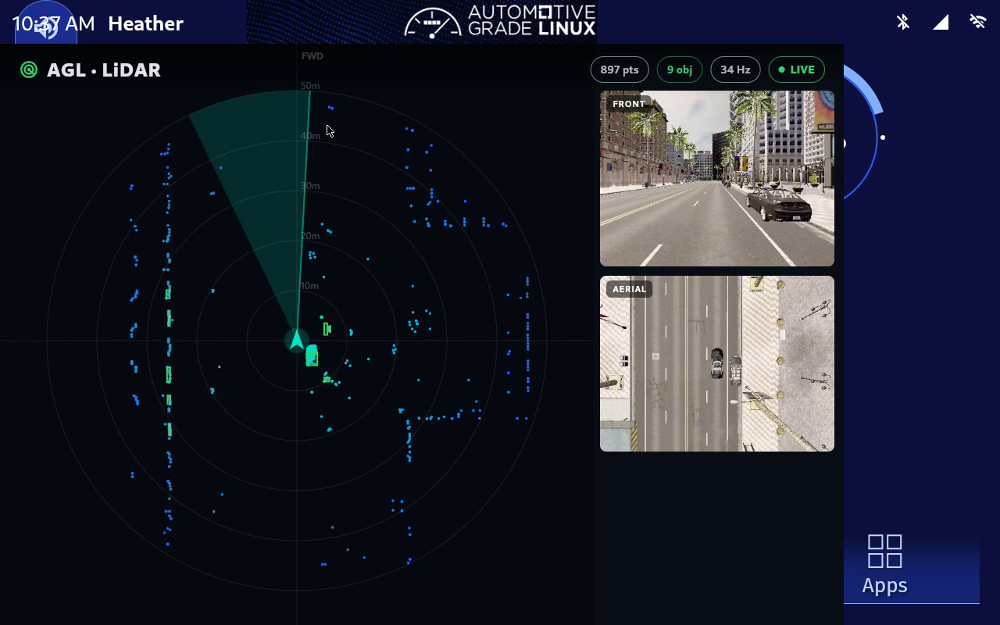
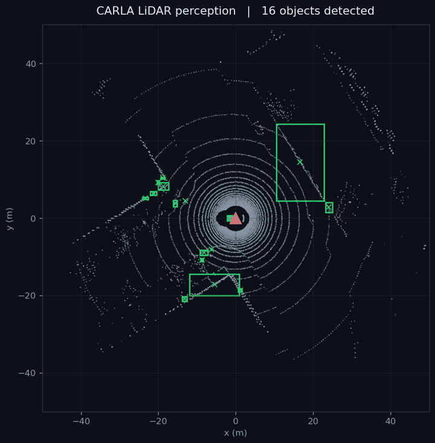
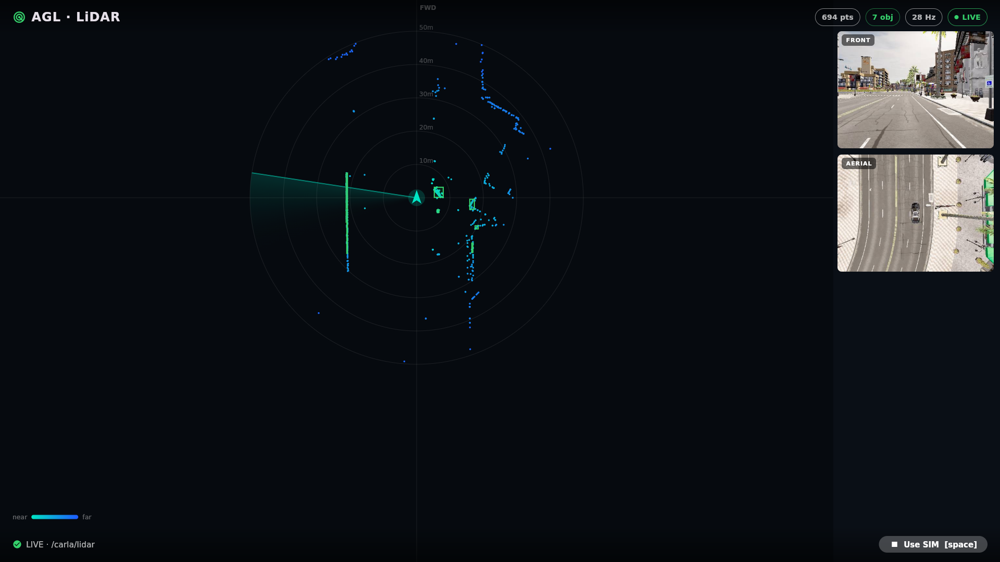
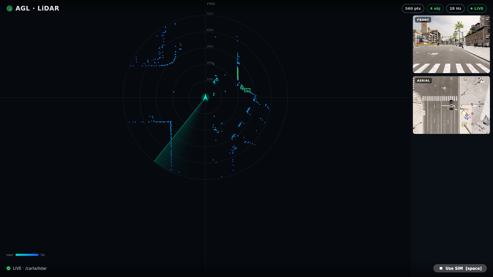
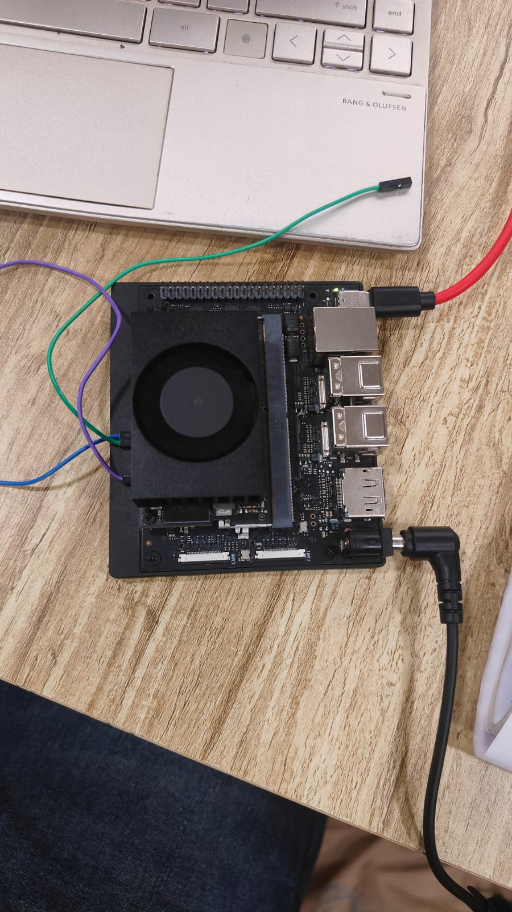
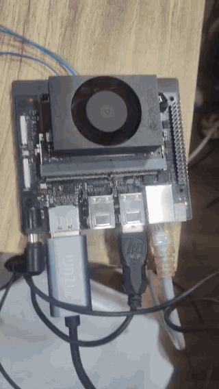

A complete, reproducible LiDAR perception demo for Automotive Grade Linux: a recorded CARLA clip becomes 3D object detections computed on the embedded target, drawn live in the vehicle's Flutter dashboard. Fully offline, no GPU, no network. Now verified running on the Jetson Orin Nano.
This project adds a LiDAR perception demo to Automotive Grade Linux, the Linux Foundation's open software stack for production vehicles. The goal was a demo an AGL developer can build and run on real hardware from a single image, mirroring a production ADAS feature: a LiDAR point cloud is turned into 3D object detections on the embedded target, and those detections are drawn in the vehicle's Flutter human-machine interface. It had to run fully offline, with no live simulator, no GPU, and no network. The work split into the Flutter HMI application, a ROS 2 perception node, and the Yocto integration that packages both into the AGL image, all upstreamed to AGL Gerrit. The summary below states what was built, where every change landed, the integration problems that were the real work, and the demo running live on the Jetson Orin Nano.
A demo that comes up on its own, on real hardware, and shows the shape of a production perception feature end to end.
Automotive Grade Linux is a Linux Foundation project building an open software stack for production vehicles. This project adds a complete, reproducible LiDAR perception demo to that stack, from the raw sensor data all the way to the in-vehicle display. The deliverable splits in two: the Flutter HMI application in its own repository, and the Yocto integration that packages the app, a ROS 2 perception node, and the data pipeline into the AGL image, upstreamed to AGL Gerrit. The constraint that shaped everything was that it had to run with no live simulator, no GPU, and no network, so it works as a dependable demonstration anywhere.

A recorded CARLA clip replays the raw sensor streams. A PCL node on the board turns the point cloud into detections in real time. The HMI subscribes over a rosbridge WebSocket and draws them.
The detector is a classic PCL pipeline. What matters is where it runs: on the target, from the raw cloud, at around 30 hertz, not replayed from the bag. It publishes vision_msgs/Detection3DArray on /carla/detections plus cube markers on /carla/detections_markers, the exact contract the HMI already consumes. The app is wired to the message, not to the algorithm, so a learned detector could replace the clustering later without touching the dashboard.

The screenshots below are captured from the Jetson's own display while the pipeline runs on the board. The badges (points, objects, hertz, LIVE) are driven by the on-target detector, frame by frame.



agl-ivi-demo-flutter image builds from AGL's own tree, flashes to this board, and boots into the demo with the detector running on the device.
Getting there was the usual embedded gap between a clean build and a clean first boot. The image built and flashed on the first proper attempt, but the backend crash-looped on boot, the SPDX license step had already stopped an earlier build dead at 77 percent, and the board's display and clock both needed attention before the dashboard would come up. Those are the problems worth documenting, in section 07.
Five pieces, from the app down to the board bring-up. Each landed upstream or is in review on AGL Gerrit.
A Flutter app that renders a top-down LiDAR view (range rings, points coloured by distance), overlays the 3D detection boxes, and shows the forward and aerial camera feeds, all fed from a rosbridge WebSocket. It is built on the AGL app template so the platform launches it as a home-screen tile. Source: agl-lidar-hmi-app, packaged upstream as agl-lidar-demo.
A C++ ROS 2 node, lidar_detector, packaged with a Yocto recipe, that runs the PCL detection pipeline on the device. This is the step that moved the demo from replaying pre-recorded boxes to computing detections live on the target, the embedded-perception goal in the project title.
A recorded CARLA rosbag plus a systemd service that starts a local rosbridge and loop-plays the raw sensor streams, so the whole demo runs offline with no simulator and no network. A DEMO_MODE switch keeps a pure-replay path for images built without the perception package, so the demo degrades gracefully.
A clean machine template for the jetson-orin-nano-devkit-nvme target and a build-unblocking fix, so the full AGL IVI image builds, flashes to the Orin Nano, and renders on its display.
Four fixes to the AGL ROS 2 layer that were required to make the image build clean and the backend run on the target: a packagegroup parse fix, a missing layer dependency, valid SPDX licenses for the rosbridge suite, and a cross-compile fix for the rosbag2 Python bindings. Detailed in section 07.
All work is public. Code changes went to AGL Gerrit (user shauryarane05); the HMI app lives in its own repository.
| Change | Layer | Status | Gerrit |
|---|---|---|---|
| Add agl-lidar-demo application | meta-agl-devel | merged | 31990 |
| Autostart the rosbag replay | meta-agl-devel | merged | 32069 |
| Add lidar-detector perception node recipe | meta-agl-devel | merged | 32137 |
| agl-lidar-demo: detect on-target | meta-agl-devel | merged | 32138 |
| Jetson Orin Nano machine template | meta-agl | in review | 32153 |
| Static GID for debug group (build unblock) | meta-agl | in review | 32152 |
| Fix packagegroup line continuation | meta-agl-devel | in review | 32155 |
| Add meta-python layer dependency | meta-agl-devel | in review | 32156 |
| rosbridge-suite: valid SPDX license | meta-agl-devel | in review | 32177 |
| rosbag2-py: fix Python extension SOABI | meta-agl-devel | in review | 32178 |
Four changes merged, six in review. Every change authored this summer is listed under this Gerrit query, and the HMI application is at github.com/shauryarane05/agl-lidar-hmi-app.
The demo ships under the AGL agl-ros2 feature, on top of the Flutter IVI demo. From the top of the AGL tree:
source meta-agl/scripts/aglsetup.sh \
-m jetson-orin-nano-devkit-nvme -b build-jetson-ivi \
agl-demo agl-flutter agl-ros2
bitbake agl-ivi-demo-flutterFlash the image, boot, and the backend starts itself: a local rosbridge on port 9090, the lidar_detector node, and the bag replay, all under one systemd service. Open the "AGL LiDAR Demo" tile, or launch it through the shell activator, and the view comes up. To check the pipeline is live on the board:
ros2 topic hz /carla/detections # expect ~30 Hz
ros2 topic info /carla/detections --verbose # publisher: lidar_detector, not the bagNone of these are in the perception algorithm. All of them stopped the demo cold until they were found, and the small, exact fixes for them are the most reusable thing the project produced.
On the first on-target boot the backend crash-looped. ros2 bag play died with "No module named 'rosbag2_py._reader'", even though the file was sitting right there. The compiled extensions were correct aarch64 binaries, but meta-ros had named them with the build host SOABI (...x86_64...), so the target Python, which computes an aarch64 SOABI, never matched them on import.
fix A bbappend that renames the extensions to the target architecture, keyed on the build and target arch so it is a no-op on native builds. Build-verified. (32178)
Every rosbridge-suite recipe declared LICENSE = "BSD", which is not a valid SPDX identifier, so AGL's license tooling refused it. Fixing rosbridge-server alone was not enough; the image pulls in six more packages that each trip the same error.
fix A valid BSD-3-Clause bbappend for all seven recipes. (32177)
A missing trailing backslash in the ROS 2 packagegroup, and a missing meta-python entry in the layer list, each broke parsing for any image enabling the agl-ros2 feature.
fix Two small corrections. (32155, 32156)
The compositor's hardware-cursor path aborts on the Tegra DRM driver, so there is no visible pointer on the home screen on this build; you drive the demo through the shell activator instead. And the devkit has no RTC battery and no NTP client, so it boots at the year 1970, which makes the HMI's TLS connection to the data broker fail with "certificate is not yet valid" until the clock is set. That one took a while to see, because nothing in the logs says the clock is wrong, only that the certificate is from the future.
workaround Drive the app through the shell activator (no cursor needed), and set the clock before the HMI starts. The cursor abort is a candidate upstream issue, and a boot-time clock-sanity service is on the list below.
The through line. On a project like this the perception algorithm is the easy part. The clustering and the bounding boxes are a solved problem. The time went into the seams, the places where a generated ROS 2 layer, a vendor board support package, and a Flutter shell are supposed to meet and do not. The most useful thing I shipped was the handful of small fixes that let the next person build the image on the first try.
meta-agl, and the four agl-ros2 integration fixes in meta-agl-devel. The last commit of the summer is the rosbag2-py fix, 32178.Thank you to my mentors, Jan-Simon Möller, Rob Woolley, and Scott Murray, for the reviews, the hardware guidance, and the patience through the long integration debugging, and to the wider Automotive Grade Linux community for a welcoming, well-run project. Thanks also to Google Summer of Code for the opportunity.